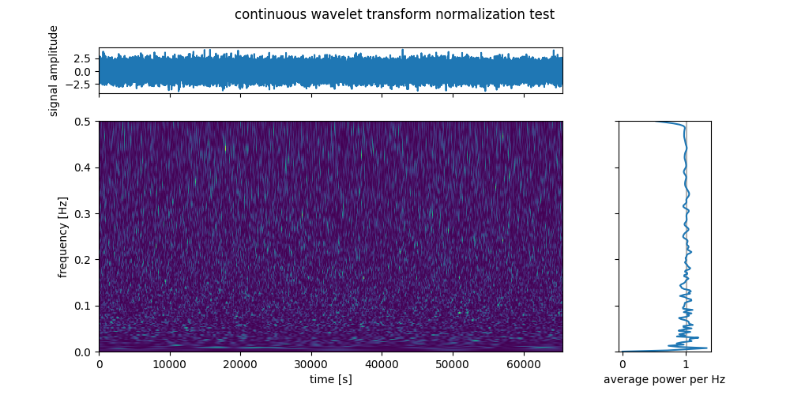

The continuous wavelet transform (CWT) is one of the most handy tools to examine time-frequency content. Many libraries exist that implement the CWT using different wavelets and methods, but often, I encounter the situation having to include the CWT in my code without a library dependency. I wrote a minimal version of the CWT that can be copy pasted into any python code and that is flexible and well normalized to be used in most standard settings. In turned out that it can be compressed to less than 11 lines of active code:
